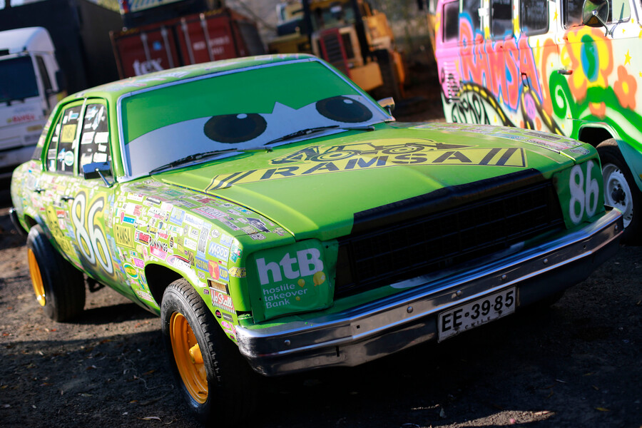

CARRO PERSONALIZADO CON IMAGEN DE PERSONAJE DE RAYO MCQUEEN!!
Fecha de trabajo: 10-04-2024.
Materiales usados:pintura,llantas.
Cambios realizados: color de auto, llantas, imagen de rayo mcqueen.
Diagnostico de mecanico:perfecto estado.
Volver